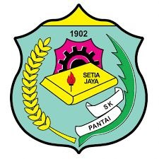
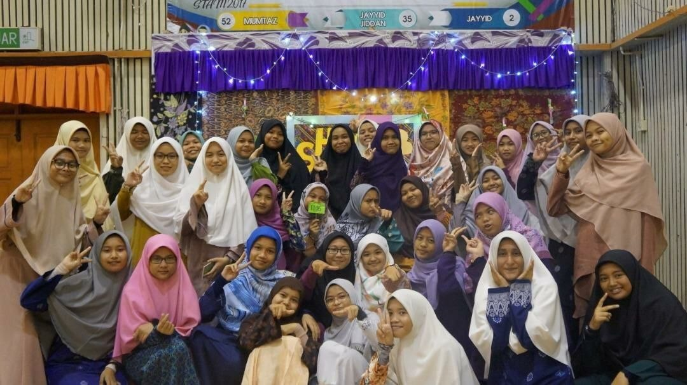
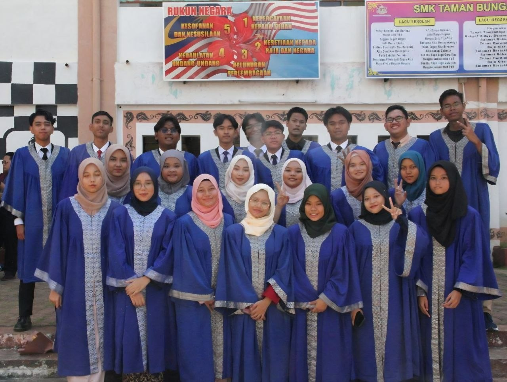
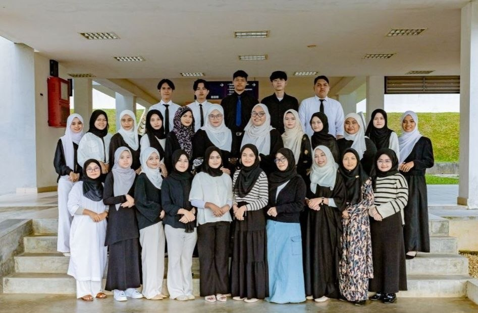

| Year | Institution |
|---|---|
| 2012 - 2017 | SK Pantai, Seremban |
| 2018 - 2020 | SABP Maahad Ahmadi, Gemencheh, Negeri Sembilan |
| 2021 - 2022 | SMK Taman Bunga Raya (1), Bukit Beruntung, Selangor |
| 2024 - Present | Universiti Teknologi MARA (UiTM) Rembau |

I completed my primary education at SK Pantai from 2012 to 2017. During this period, I developed a strong academic foundation and actively participated in school activities that enhanced my communication and teamwork skills.

I began my high school education at SABP Maahad Ahmadi, Gemencheh, Negeri Sembilan, where I studied from Form 1 to Form 3 (2018–2020). During this period, I developed strong academic and personal skills while actively participating in various school and co-curricular activities.

In 2021, I continued my studies at SMK Taman Bunga Raya (1), Bukit Beruntung, Selangor, where I completed Form 4 and Form 5 (2021–2022). I successfully completed and sat for the Sijil Pelajaran Malaysia (SPM) examination at this school. My secondary school journey helped me strengthen my knowledge, discipline, leadership, and communication skills.

I am currently pursuing a Diploma in Information Management at Universiti Teknologi MARA (UiTM) Rembau. My studies focus on records management, information organization, digital content management, and administrative practices, preparing me for a professional career in the information field.